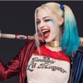
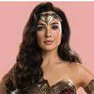

BATMAN
Bruce Wayne é o único personagem a se identificar como Batman e aparece em Batman, Detective Comics, Batman e Robin e Batman: O Cavaleiro das Trevas. Dick Grayson retorna ao manto de Asa Noturna

ARLEQUINA
A criação de Arlequina foi uma ideia de última hora proposta pelo escritor americano Paul Dini para modificar uma cena do vigésimo segundo episódio de Batman: The Animated Series.

MULHER MARAVILHA
É uma super-heroína criada por William Moulton Marston para a editora DC Comics. Ela é uma princesa guerreira das Amazonas. Em sua terra natal, é conhecida como Princesa Diana de Themyscira.